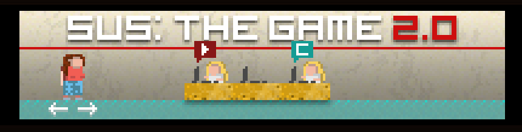
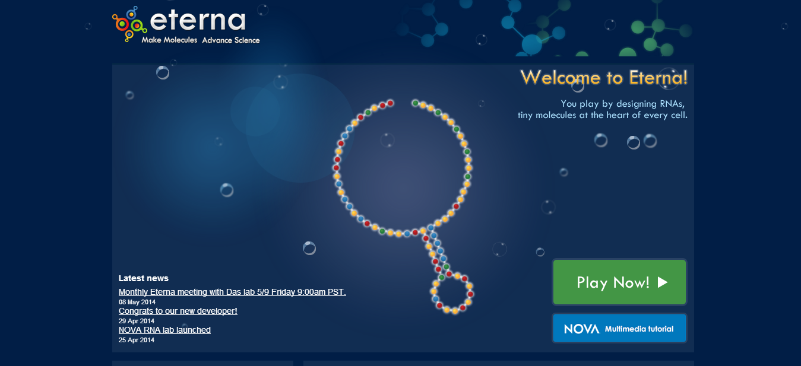

Jogando a Democracia
O Universo de jogos voltados para política
por Luciano SB / @lucianosb
Democracia Digital
- hackathons
- visualização de dados
- comentários em textos
A democracia é um jogo?
Definição de Jogo

Para saber mais: assista a este video.
Jogos e Política
Cenário Atual
Sus: The Game
V de Vinagre
A Pequena Grande Crise

Democracy 3
Games With a Purpose
(GWAP)
Foldit
EteRNA
Minha Proposta
Jogos sobre e para fazer política
Deliberatório

Estágio atual: desenvolvimento de API
Agora é nossa vez
Transformando o processo legislativo em jogo
- Objetivo: produzir projetos de lei
- Quem são os jogadores?
- O que ganham ao jogar?